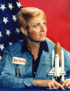

Lyndon B. Johnson Space Center
Houston, Texas 77058
|
National Aeronautics and Space Administration Lyndon B. Johnson Space Center Houston, Texas 77058 |
 |
Biographical Data |
||
Millie Hughes-Fulford (Ph.D.)
Payload Specialist Astronaut (Former)
PERSONAL DATA: Born December 21, 1945 in Mineral Wells, Texas. Married, her husband, George Fulford, is a retired Captain with United Airlines and they live in Hawaii. Her daughter is married and lives in Mill Valley. Recreational interests include scuba diving, swimming, gardening, photography, computer graphics and boating. Her mother and father are deceased.
EDUCATION: Graduated from Mineral Wells High, in 1962; received her Bachelor of Science degree in Chemistry and Biology from Tarleton State University in 1968, and her Ph.D. from Texas Woman's University in 1972.
ORGANIZATIONS: Member of the American Association for the Advancement of Science, American Society for Gravitational Science and Biology, American Society for Bone and Mineral Research, American Society for Cell Biology and the Association of Space Explorers.
SPECIAL HONORS: July 2013 NASA Top ISS Discovery, 2005 First Place Winner VideoMaker Short Film Contest; 2004 to 2013 Board of Trustees for USRA. From 2001 to present Board of Trustees Tiburon Romberg Center; 1995 to present, Organizing Committee for the International Conference on Eicosanoids and other active Bio-lipids; 1995 to 2001, Advisory Board for Marine Biological Library Sciences Writing Program, Woods Hole, Massachusetts; 1994 Marin County Woman of the Year. In 1991, she received the NASA Space Flight Medal. From 1987-1990 she was a member of the Committee on Space Biology and Space Medicine, National Research Council; 1986 to 1989 Board of Regents Embry-Riddle University, Daytona Beach, Florida; l984 Presidential Award for Federal Employee for Western Region; 1972 American Association of University Women's Fellowship; 1968 to 1971 National Summer Research Fellow (Undergraduate).
EXPERIENCE: Dr. Hughes-Fulford entered college at the age of 16 and earned her Bachelor of Science degree in chemistry and biology from Tarleton State University in 1968. In 1968, Dr. Hughes-Fulford began her graduate work studying plasma chemistry at Texas Woman's University as a National Science Foundation Graduate Fellow from 1968 to 1971. She was an American Association of University Women fellow from 1971 to 1972. Upon completing her doctorate at Texas Women’s University in 1972, Dr. Hughes-Fulford joined the faculty of Southwestern Medical School, University of Texas, Dallas as a postdoctoral fellow with Marvin D. Siperstein, where her research focused on regulation of cholesterol metabolism. Dr. Hughes-Fulford has contributed over 120 papers and abstracts on T-cell activation, bone and cancer growth regulation. Since then, she was named the Federal Employee of the Year for the Western Region in 1985, International Zontian in 1992 and Marin County Woman of the Year in 1993. She was a major in the U.S. Army Reserve Medical Corps until 1995.
Dr. Hughes-Fulford was selected as a payload specialist by NASA in January 1983 and flew in June 1991 aboard STS-40 Spacelab Life Sciences (SLS 1), the first Spacelab mission dedicated to biomedical studies. The SLS-1 mission flew over 3.2 million miles in 146 orbits and its crew completed over 18 experiments during a 9-day period bringing back more medical data than any previous NASA flight. Mission duration was 218 hours, 14 minutes and 20 seconds.
Dr. Hughes-Fulford is a Professor at the University of California Medical Center at San Francisco where she continues her research. As the Director of the Hughes-Fulford Laboratory, she studies the control of lymphocyte activation with NIH and NASA grants. She was the Principal Investigator (PI) on a series of SpaceHab/Biorack experiments, which examined the regulation of osteoblast (bone cell) growth. These experiments flew on STS-76, in March of 1996, STS-81 in January 1997 and STS-84 in May 1997. These studies examined the root causes of osteoporosis that occurs in astronauts during spaceflight. She found changes in anabolic signal transduction in microgravity. In collaboration with Dr. Augusto Cogoli of Zurich, Switzerland, she examined changes in T-cell gene induction in spaceflight in a joint NASA/ESA International Space Station experiment that went up on the Soyuz in September 2006. The previous Leukin experiment with Dr. Cogoli was lost on the STS-107 mission. This study (Leukin) examined the mechanism of action causing the decrease in T-cell activation in microgravity, a medical problem that was first found in returning Apollo astronauts. Isolated T-cells were activated in spaceflight on KUBIK hardware on International Space Station (ISS); the altered gene activation was examined using Affymetrix gene chip and real-time RTPCR.
More recently, Dr. Hughes-Fulford, her team and her international colleagues published a featured article in the Journal of Leukocyte Biology showing for the first time that microgravity itself is the root cause of T-cell dysfunction. In July 2013, NASA awarded her work as a top discovery on ISS.
In the Spring of 2014, her latest NIH immunology experiment will fly on SpaceX-3 for further ISS studies. More information on her laboratory and studies can be obtained at http://www.hughesfulfordlab.coma>.
March 2014
This is the only version available from NASA. Updates must be sought direct from the above named individual.
{kind=link}